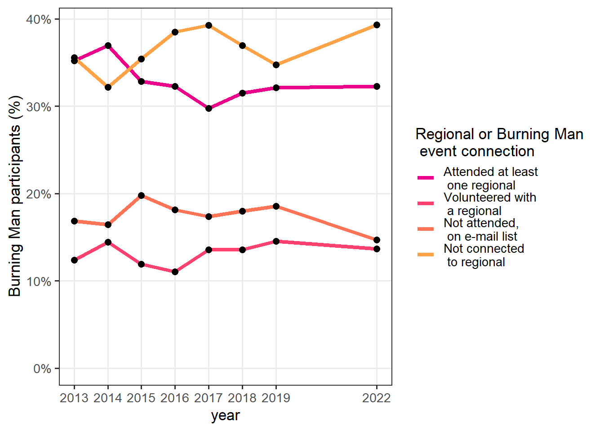
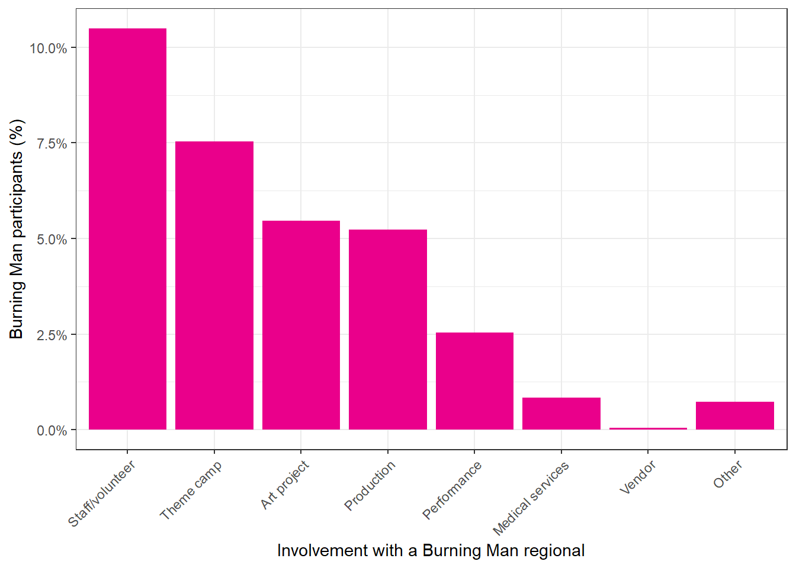
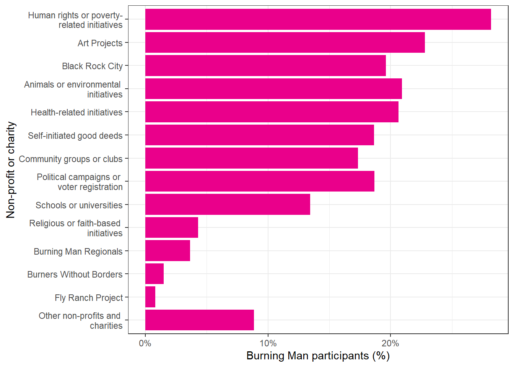
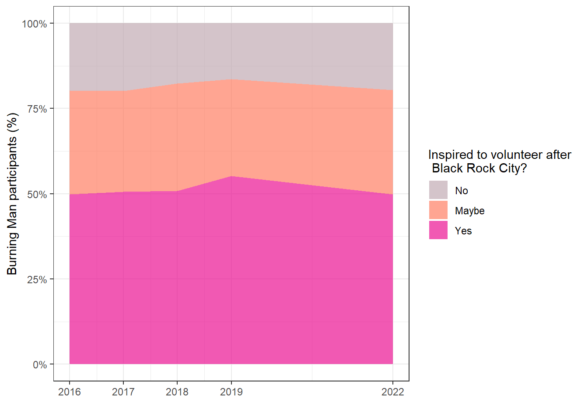
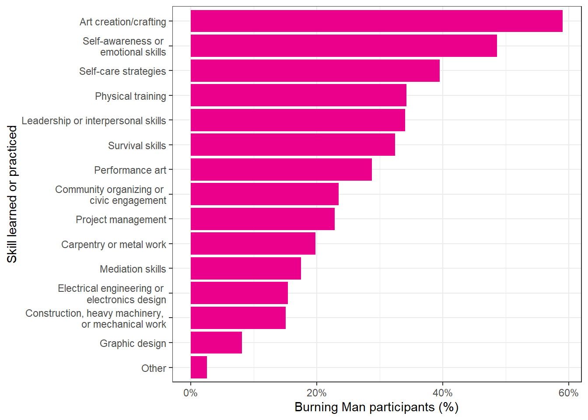
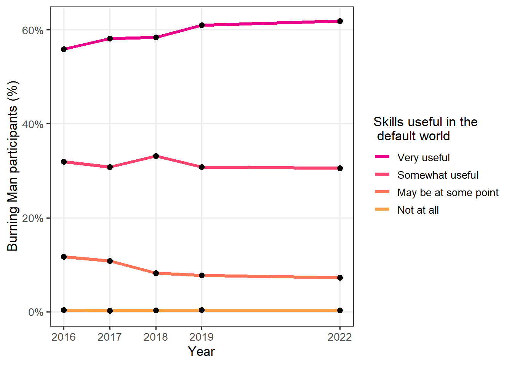
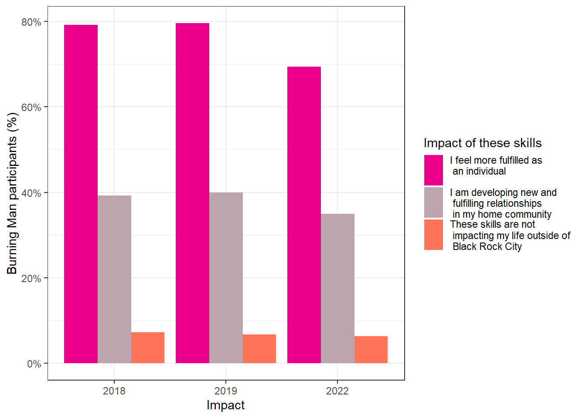

Chapter 3 Beyond the Burn – regionals, media, and volunteering
3.1 Regionals
3.1.1 Attended any regional Burning Man events/mixers/gatherings
| 2013 | 2014 | 2015 | 2016 | 2017 | 2018 | 2019 | 2022 | |
|---|---|---|---|---|---|---|---|---|
| Attended at least one regional | 35.2% (34.3%, 36.2%) | 36.9% (36.0%, 37.9%) | 32.9% (31.9%, 33.9%) | 32.3% (31.1%, 33.6%) | 29.8% (28.8%, 30.8%) | 31.5% (30.4%, 32.6%) | 32.1% (31.0%, 33.2%) | 32.3% (31.2%, 33.4%) |
| Volunteered with a regional | 12.4% (11.7%, 13.0%) | 14.4% (13.7%, 15.2%) | 11.9% (11.3%, 12.6%) | 11.0% (10.3%, 11.8%) | 13.6% (12.9%, 14.3%) | 13.6% (12.8%, 14.3%) | 14.5% (13.7%, 15.4%) | 13.7% (12.9%, 14.5%) |
| Not attended, on e-mail list | 16.9% (16.1%, 17.6%) | 16.4% (15.7%, 17.2%) | 19.8% (18.9%, 20.7%) | 18.2% (17.1%, 19.2%) | 17.4% (16.5%, 18.3%) | 18.0% (17.1%, 18.9%) | 18.6% (17.7%, 19.5%) | 14.7% (13.9%, 15.6%) |
| Not connected to regional | 35.6% (34.6%, 36.5%) | 32.2% (31.3%, 33.1%) | 35.4% (34.4%, 36.5%) | 38.5% (37.2%, 39.9%) | 39.3% (38.2%, 40.4%) | 37.0% (35.8%, 38.1%) | 34.8% (33.7%, 35.9%) | 39.3% (38.1%, 40.5%) |
3.1.2 Involvement with a regional Burning Man event
| 2015 | 2016 | 2017 | 2018 | 2019 | 2022 | |
|---|---|---|---|---|---|---|
| Staff/volunteer | – | – | – | – | 11.0% (10.4%, 11.8%) | 10.5% (9.8%, 11.2%) |
| Theme camp | 6.5% (6.0%, 7.0%) | 5.9% (5.3%, 6.5%) | 7.7% (7.1%, 8.2%) | 7.6% (7.1%, 8.2%) | 8.2% (7.6%, 8.9%) | 7.5% (7.0%, 8.1%) |
| Art project | 5.0% (4.6%, 5.5%) | 4.0% (3.5%, 4.4%) | 5.2% (4.8%, 5.7%) | 5.3% (4.8%, 5.8%) | 5.2% (4.7%, 5.8%) | 5.5% (5.0%, 6.0%) |
| Production | 6.1% (5.6%, 6.6%) | 5.6% (5.1%, 6.2%) | 6.8% (6.3%, 7.4%) | 6.5% (6.0%, 7.1%) | 5.4% (4.9%, 6.0%) | 5.2% (4.8%, 5.7%) |
| Performance | 2.9% (2.6%, 3.3%) | 2.4% (2.1%, 2.9%) | 3.1% (2.8%, 3.5%) | 2.7% (2.4%, 3.1%) | 2.4% (2.1%, 2.8%) | 2.5% (2.2%, 2.9%) |
| Medical services | – | – | – | – | 0.9% (0.7%, 1.1%) | 0.8% (0.7%, 1.1%) |
| Vendor | 0.1% (0.1%, 0.2%) | 0.3% (0.2%, 0.4%) | 0.2% (0.1%, 0.3%) | 0.2% (0.1%, 0.3%) | 0.1% (0.1%, 0.3%) | < 0.1% (–, –) |
| Other | 3.4% (3.0%, 3.8%) | 4.0% (3.5%, 4.6%) | 5.0% (4.5%, 5.4%) | 4.4% (4.0%, 4.9%) | 1.1% (0.9%, 1.4%) | 0.7% (0.6%, 1.0%) |
3.2 Burning Man Media
3.2.1 Most valuable types of information coming from Burning Man Project

| 2014 | 2015 | 2016 | 2017 | 2018 | 2019 | 2022 | |
|---|---|---|---|---|---|---|---|
| Black Rock City events | 58.0% (57.0%, 59.0%) | 59.1% (57.9%, 60.2%) | 57.8% (56.5%, 59.2%) | 53.2% (52.1%, 54.4%) | 56.4% (55.2%, 57.6%) | 55.2% (54.0%, 56.4%) | 45.8% (44.6%, 47.0%) |
| Bay Area events | 17.5% (16.7%, 18.3%) | 15.6% (14.8%, 16.5%) | 14.5% (13.6%, 15.4%) | 14.1% (13.4%, 14.9%) | 14.3% (13.5%, 15.2%) | 13.9% (13.0%, 14.7%) | 10.6% (9.9%, 11.4%) |
| Events around the world | 12.7% (12.0%, 13.4%) | 14.0% (13.2%, 14.9%) | 14.5% (13.5%, 15.5%) | 13.5% (12.7%, 14.3%) | 14.7% (13.9%, 15.6%) | 12.5% (11.7%, 13.3%) | 10.8% (10.1%, 11.6%) |
| Burning Man Regional events | 25.5% (24.6%, 26.4%) | 27.8% (26.8%, 28.9%) | 29.3% (28.1%, 30.6%) | 29.3% (28.2%, 30.3%) | 29.2% (28.1%, 30.2%) | 28.2% (27.1%, 29.3%) | 24.8% (23.8%, 25.9%) |
| Volunteer opportunits with teams or departments | 22.6% (21.8%, 23.5%) | 21.4% (20.4%, 22.3%) | 23.0% (21.8%, 24.1%) | 25.8% (24.8%, 26.8%) | 27.0% (25.9%, 28.0%) | 28.3% (27.2%, 29.4%) | 23.4% (22.4%, 24.4%) |
| Opportunities to create or assist with art | – | – | – | – | – | – | 23.4% (22.4%, 24.5%) |
| Black Rock City preparation information | 43.5% (42.5%, 44.5%) | 42.2% (41.1%, 43.3%) | 40.6% (39.2%, 41.9%) | 40.4% (39.3%, 41.6%) | 40.5% (39.3%, 41.7%) | 29.3% (28.2%, 30.4%) | 28.1% (27.0%, 29.2%) |
| Information about camps | – | – | – | – | – | 18.7% (17.7%, 19.6%) | 16.3% (15.4%, 17.3%) |
| Photos and videos from Black Rock City | 54.3% (53.3%, 55.3%) | 52.4% (51.2%, 53.5%) | 44.8% (43.4%, 46.2%) | 43.3% (42.1%, 44.5%) | 39.2% (38.0%, 40.3%) | 28.4% (27.3%, 29.5%) | 28.9% (27.8%, 30.0%) |
| Stories about Burners from around the world | 28.5% (27.6%, 29.4%) | 29.1% (28.0%, 30.2%) | 32.3% (31.0%, 33.6%) | 33.5% (32.4%, 34.6%) | 32.7% (31.6%, 33.8%) | 23.4% (22.4%, 24.5%) | 17.1% (16.2%, 18.0%) |
| Information about non-profit activities | – | 6.9% (6.3%, 7.5%) | 11.1% (10.2%, 12.0%) | 13.7% (13.0%, 14.5%) | 13.7% (12.9%, 14.5%) | 9.3% (8.6%, 10.0%) | 5.2% (4.7%, 5.7%) |
| Information supporting R.I.D.E. | – | – | – | – | – | – | 9.9% (9.3%, 10.7%) |
| Resources about sustainability at Burning Man | – | – | – | – | – | – | 11.5% (10.8%, 12.3%) |
| Other | 1.8% (1.5%, 2.1%) | 1.2% (0.9%, 1.4%) | 0.9% (0.7%, 1.1%) | 1.0% (0.8%, 1.2%) | 1.1% (0.9%, 1.4%) | 0.9% (0.7%, 1.2%) | 0.7% (0.5%, 0.9%) |
3.2.2 Listened to BMIR (Burning Man Information Radio) this year

| 2014 | 2015 | 2016 | 2017 | 2018 | 2019 | 2022 | |
|---|---|---|---|---|---|---|---|
| Listened online | 18.0% (17.3%, 18.8%) | 16.2% (15.4%, 17.0%) | – | 11.2% (10.5%, 11.9%) | 11.8% (11.1%, 12.5%) | 10.3% (9.6%, 11.0%) | 9.4% (8.7%, 10.1%) |
| Listened while traveled | 25.6% (24.7%, 26.5%) | 25.5% (24.6%, 26.5%) | 32.5% (31.2%, 33.7%) | 22.0% (21.1%, 23.0%) | 23.2% (22.3%, 24.2%) | 21.5% (20.6%, 22.5%) | 24.8% (23.7%, 25.8%) |
| Listened over the air at Black Rock City | 73.9% (73.1%, 74.8%) | 68.0% (66.9%, 69.0%) | 61.2% (59.9%, 62.6%) | 64.6% (63.5%, 65.7%) | 64.3% (63.1%, 65.4%) | 60.4% (59.2%, 61.5%) | 67.9% (66.8%, 69.1%) |
| Listened over speakers at BMIR or Center Camp | 15.9% (15.2%, 16.7%) | 16.0% (15.2%, 16.9%) | 14.2% (13.3%, 15.1%) | 13.2% (12.5%, 14.0%) | 13.7% (12.9%, 14.5%) | 12.0% (11.3%, 12.8%) | 6.6% (6.1%, 7.2%) |
| Did not know about BMIR | 1.2% (1.0%, 1.4%) | 2.0% (1.7%, 2.3%) | 2.5% (2.1%, 3.1%) | 2.8% (2.4%, 3.3%) | 2.3% (2.0%, 2.7%) | 3.3% (2.9%, 3.8%) | 2.2% (1.8%, 2.6%) |
| Knew about BMIR, but did not listen to it | 10.0% (9.4%, 10.6%) | 15.0% (14.2%, 15.9%) | 16.4% (15.4%, 17.4%) | 18.0% (17.1%, 19.0%) | 17.4% (16.6%, 18.4%) | 20.2% (19.2%, 21.2%) | 14.6% (13.7%, 15.5%) |
3.3 Volunteerism and donations
3.3.1 Volunteered in the last year

| 2016 | 2017 | 2018 | 2019 | 2022 | |
|---|---|---|---|---|---|
| Self-initiated good deeds | 36.9% (35.6%, 38.2%) | 37.1% (36.0%, 38.3%) | 35.3% (34.2%, 36.5%) | 35.7% (34.6%, 36.9%) | 33.2% (32.1%, 34.3%) |
| Community groups or clubs | 27.7% (26.6%, 28.9%) | 27.1% (26.1%, 28.1%) | 25.3% (24.3%, 26.3%) | 23.1% (22.1%, 24.1%) | 21.5% (20.5%, 22.5%) |
| Art Projects | 21.1% (20.1%, 22.2%) | 23.0% (22.1%, 24.0%) | 22.7% (21.7%, 23.6%) | 23.0% (22.0%, 24.0%) | 18.7% (17.8%, 19.6%) |
| Black Rock City | 20.8% (19.8%, 21.8%) | 23.7% (22.8%, 24.7%) | 12.8% (12.0%, 13.5%) | 15.4% (14.6%, 16.3%) | 14.6% (13.8%, 15.4%) |
| Human rights or poverty- related initiatives | – | – | – | 15.3% (14.5%, 16.1%) | 13.5% (12.7%, 14.3%) |
| Animals or environmental initiatives | 14.8% (13.8%, 15.8%) | 15.6% (14.8%, 16.5%) | 14.3% (13.5%, 15.1%) | 13.3% (12.5%, 14.1%) | 11.0% (10.3%, 11.8%) |
| Schools or universities | 15.3% (14.3%, 16.3%) | 14.6% (13.8%, 15.5%) | 12.5% (11.8%, 13.3%) | 13.5% (12.7%, 14.3%) | 10.4% (9.8%, 11.2%) |
| Health-related initiatives | – | – | – | 10.7% (10.0%, 11.5%) | 10.3% (9.6%, 11.0%) |
| Burning Man Regionals | 11.6% (10.8%, 12.5%) | 14.3% (13.5%, 15.1%) | 10.3% (9.6%, 11.0%) | 11.9% (11.1%, 12.7%) | 9.6% (9.0%, 10.3%) |
| Political campaigns or voter registration | 9.9% (9.2%, 10.6%) | 11.4% (10.7%, 12.1%) | 9.5% (8.8%, 10.1%) | 9.9% (9.2%, 10.6%) | 8.3% (7.7%, 8.9%) |
| Religious or faith-based initiatives | – | – | – | 3.0% (2.6%, 3.4%) | 2.5% (2.2%, 2.9%) |
| Fly Ranch Project | – | – | – | 1.2% (1.0%, 1.5%) | 1.0% (0.8%, 1.2%) |
| Burners Without Borders | 1.0% (0.8%, 1.2%) | 1.4% (1.2%, 1.7%) | 1.2% (1.0%, 1.5%) | 1.8% (1.5%, 2.2%) | 0.9% (0.7%, 1.2%) |
| Other non-profits and charities | 11.8% (11.0%, 12.7%) | 11.5% (10.8%, 12.3%) | 10.6% (10.0%, 11.3%) | 8.0% (7.4%, 8.7%) | 7.0% (6.4%, 7.6%) |
3.3.2 Approximate average hours per month spent on volunteer efforts last year

| 2018 | 2019 | 2022 | |
|---|---|---|---|
| 10th percentile | 2 (2, 3) | 1 (1, 2) | 1 (1, 2) |
| 25th percentile | 4 (4, 5) | 3 (3, 4) | 3 (3, 4) |
| Median | 8 (8, 10) | 7 (6, 8) | 6 (6, 8) |
| 75th percentile | 20 (20, 25) | 15 (15, 17) | 18 (15, 20) |
| 90th percentile | 40 (40, 50) | 40 (40, 50) | 40 (40, 50) |
| 99th percentile | 200 (200, 300) | 200 (200, 300) | 200 (200, 300) |
3.3.3 Made a charitable donation in the last year
| 2019 | 2022 | |
|---|---|---|
| Human rights or poverty- related initiatives | 27.5% (26.4%, 28.5%) | 28.2% (27.1%, 29.3%) |
| Art Projects | 22.8% (21.8%, 23.8%) | 19.8% (18.9%, 20.7%) |
| Black Rock City | 9.5% (8.8%, 10.2%) | 19.6% (18.7%, 20.6%) |
| Animals or environmental initiatives | 20.9% (20.0%, 21.9%) | 19.8% (18.8%, 20.7%) |
| Health-related initiatives | 20.6% (19.7%, 21.6%) | 18.8% (17.9%, 19.7%) |
| Self-initiated good deeds | 18.6% (17.7%, 19.6%) | 18.5% (17.6%, 19.4%) |
| Community groups or clubs | 17.2% (16.3%, 18.1%) | 17.3% (16.5%, 18.2%) |
| Political campaigns or voter registration | 18.7% (17.8%, 19.6%) | 15.7% (14.9%, 16.5%) |
| Schools or universities | 13.5% (12.7%, 14.3%) | 10.9% (10.2%, 11.6%) |
| Religious or faith-based initiatives | 4.3% (3.9%, 4.8%) | 3.8% (3.3%, 4.2%) |
| Burning Man Regionals | 3.6% (3.2%, 4.1%) | 3.4% (3.0%, 3.8%) |
| Burners Without Borders | 1.5% (1.2%, 1.8%) | 1.0% (0.8%, 1.2%) |
| Fly Ranch Project | 0.8% (0.6%, 1.1%) | 0.6% (0.5%, 0.8%) |
| Other non-profits and charities | 8.2% (7.6%, 8.9%) | 8.9% (8.2%, 9.6%) |
3.3.4 Inspiration to volunteer, donate, or get involved after going to Black Rock City
| 2016 | 2017 | 2018 | 2019 | 2022 | |
|---|---|---|---|---|---|
| No | 19.7% (18.7%, 20.7%) | 19.9% (18.9%, 20.8%) | 17.6% (16.7%, 18.5%) | 16.3% (15.4%, 17.2%) | 19.6% (18.6%, 20.5%) |
| Maybe | 30.5% (29.3%, 31.8%) | 29.5% (28.4%, 30.6%) | 31.5% (30.5%, 32.6%) | 28.5% (27.4%, 29.6%) | 30.6% (29.5%, 31.7%) |
| Yes | 49.8% (48.4%, 51.1%) | 50.6% (49.4%, 51.8%) | 50.9% (49.7%, 52.0%) | 55.2% (54.0%, 56.4%) | 49.9% (48.6%, 51.1%) |
3.4 New skills
3.4.1 Inspiration to practice or learn skills after going to Black Rock City
| 2016 | 2017 | 2018 | 2019 | 2022 | |
|---|---|---|---|---|---|
| Art creation/crafting | 58.4% (57.1%, 59.8%) | 56.2% (55.0%, 57.4%) | 59.9% (58.8%, 61.1%) | 60.8% (59.6%, 62.0%) | 59.0% (57.9%, 60.2%) |
| Self-awareness or emotional skills | 58.1% (56.8%, 59.4%) | 57.6% (56.4%, 58.8%) | 56.4% (55.3%, 57.6%) | 51.8% (50.6%, 53.0%) | 48.6% (47.4%, 49.8%) |
| Self-care strategies | – | – | 43.0% (41.8%, 44.1%) | 40.4% (39.2%, 41.6%) | 39.5% (38.3%, 40.7%) |
| Physical training | – | – | – | 37.2% (36.0%, 38.4%) | 34.2% (33.1%, 35.4%) |
| Leadership or interpersonal skills | 37.0% (35.7%, 38.3%) | 39.0% (37.8%, 40.2%) | 40.3% (39.2%, 41.5%) | 37.8% (36.6%, 38.9%) | 34.0% (32.9%, 35.2%) |
| Survival skills | – | – | 35.2% (34.1%, 36.3%) | 29.0% (28.0%, 30.1%) | 32.4% (31.3%, 33.6%) |
| Performance art | 25.7% (24.5%, 26.9%) | 24.7% (23.6%, 25.7%) | 26.4% (25.4%, 27.5%) | 29.7% (28.6%, 30.8%) | 28.8% (27.7%, 29.9%) |
| Community organizing or civic engagement | – | – | 24.4% (23.4%, 25.4%) | 24.3% (23.3%, 25.3%) | 23.5% (22.5%, 24.5%) |
| Project management | 26.2% (25.0%, 27.4%) | 26.7% (25.7%, 27.8%) | 29.2% (28.2%, 30.3%) | 25.8% (24.7%, 26.8%) | 22.8% (21.8%, 23.9%) |
| Carpentry or metal work | 26.1% (24.9%, 27.2%) | 26.1% (25.1%, 27.2%) | 26.6% (25.6%, 27.7%) | 21.0% (20.0%, 22.0%) | 19.8% (18.9%, 20.8%) |
| Mediation skills | 26.6% (25.4%, 27.8%) | 27.1% (26.0%, 28.2%) | 24.4% (23.4%, 25.4%) | 22.3% (21.3%, 23.3%) | 17.5% (16.6%, 18.5%) |
| Electrical engineering or electronics design | – | – | – | 17.0% (16.1%, 17.9%) | 15.4% (14.5%, 16.3%) |
| Construction, heavy machinery, or mechanical work | 15.1% (14.1%, 16.1%) | 15.6% (14.7%, 16.5%) | 14.5% (13.7%, 15.4%) | 15.7% (14.8%, 16.6%) | 15.0% (14.2%, 15.9%) |
| Graphic design | 10.6% (9.8%, 11.5%) | 9.8% (9.1%, 10.6%) | 10.3% (9.6%, 11.0%) | 9.2% (8.5%, 9.9%) | 8.1% (7.5%, 8.8%) |
| Other | 4.2% (3.7%, 4.8%) | 3.4% (3.0%, 3.9%) | 3.0% (2.6%, 3.4%) | 2.7% (2.3%, 3.1%) | 2.5% (2.2%, 2.9%) |
3.4.2 Have any of these skills proved useful in the default world?
| 2016 | 2017 | 2018 | 2019 | 2022 | |
|---|---|---|---|---|---|
| Very useful | 55.9% (54.5%, 57.4%) | 58.2% (56.9%, 59.5%) | 58.4% (57.2%, 59.6%) | 61.0% (59.8%, 62.3%) | 61.9% (60.6%, 63.1%) |
| Somewhat useful | 32.0% (30.6%, 33.3%) | 30.8% (29.6%, 32.0%) | 33.1% (32.0%, 34.3%) | 30.8% (29.7%, 32.0%) | 30.5% (29.4%, 31.7%) |
| May be at some point | 11.7% (10.8%, 12.7%) | 10.8% (10.0%, 11.7%) | 8.2% (7.5%, 8.9%) | 7.7% (7.1%, 8.4%) | 7.3% (6.7%, 8.0%) |
| Not at all | 0.4% (0.3%, 0.6%) | 0.2% (0.1%, 0.4%) | 0.3% (0.2%, 0.4%) | 0.4% (0.3%, 0.6%) | 0.3% (0.2%, 0.5%) |
3.4.3 How are you using these skills outside of Black Rock City?

| 2017 | 2018 | 2019 | 2022 | |
|---|---|---|---|---|
| I am creating things for myself or my family | 66.0% (64.7%, 67.2%) | 66.8% (65.6%, 67.9%) | 67.6% (66.4%, 68.8%) | 60.4% (59.2%, 61.6%) |
| I am using my time at home to create things that I will bring to Black Rock City | 43.1% (41.9%, 44.4%) | 45.5% (44.3%, 46.7%) | 46.2% (45.0%, 47.5%) | 38.3% (37.2%, 39.5%) |
| I am creating things for my home community | 34.8% (33.6%, 36.0%) | 34.0% (32.9%, 35.2%) | 36.3% (35.1%, 37.5%) | 33.1% (32.0%, 34.2%) |
| I am teaching those skills to members of my home community | 29.7% (28.6%, 30.9%) | 30.1% (29.0%, 31.3%) | 29.1% (28.0%, 30.3%) | 25.1% (24.1%, 26.2%) |
| I am not using these skills outside of Black Rock City | – | 6.3% (5.7%, 7.0%) | 5.2% (4.7%, 5.8%) | 4.9% (4.4%, 5.5%) |
3.4.4 Impact of these new skills outside of Black Rock City
| 2018 | 2019 | 2022 | |
|---|---|---|---|
| I feel more fulfilled as an individual | 79.2% (78.2%, 80.2%) | 79.6% (78.5%, 80.6%) | 69.4% (68.3%, 70.5%) |
| I am developing new and fulfilling relationships in my home community | 39.3% (38.1%, 40.5%) | 40.0% (38.7%, 41.2%) | 35.0% (33.9%, 36.2%) |
| These skills are not impacting my life outside of Black Rock City | 7.3% (6.7%, 8.0%) | 6.7% (6.1%, 7.4%) | 6.4% (5.8%, 7.0%) |